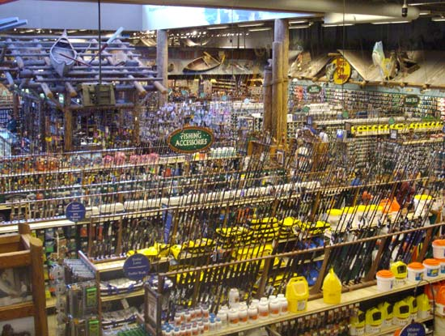
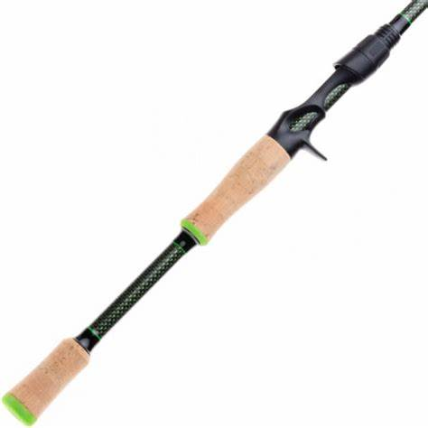
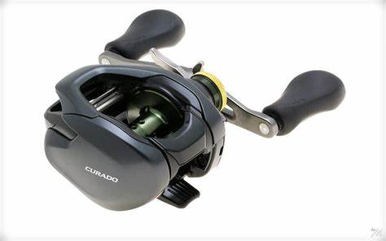
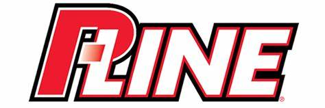
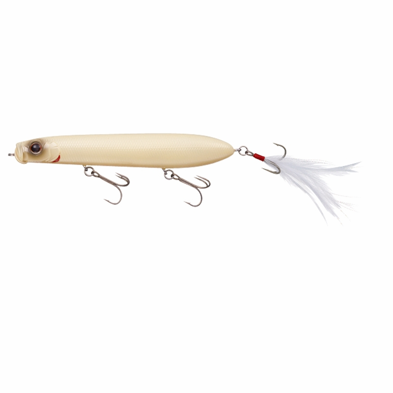

Endless options
No two anglers choice of gear is ever the same. Even all the pros use diferent brands, styles, and sizes of the same bait, and swear by them. The fact that they are proffesionals means that each one of them are right, they all work. This can lead to beginners and even experienced anglers overwhelmed.
So I will tell you guys my two cents on gear. The neccesities are a rod, reel, line, and lure(s).
Rods
I'm a really big fan of halo rods. They are a relativley new company and their products are very affordable. Their KSII series, both the casting and the spinning rods are very nice. Very sensitive, light, and reliable. They are also the most expensive halos, coming in at $169.00 which is a very reasonable price for the quality of rod it is.
Reels
As for reels, my favorite brand is by far shimano. They have really set the industry standard for price and quaility. Their slx casting reel is a great and very affordable option at $99.99. My personal favorite reel is the curado K as I grew up fishing the original version of it, and it is such a workhorse and versitile reel. It comes in at $199.99
Line
For line I always use P-line. Their 100% flourocarbon is unbelievably strong, and so is their copolymar topwater line
A few lures
As for lures I could talk about for days. There are thousands of different kinds with different weights, sizes, colors. Some soft plastic, some hard plastic, some pure metal. For soft plastic, zoom id definitley my favorite brand. Their magnum finesse worm always has a place in my tackle box. One bait I have used alot this year and plan on continuing to do so is river2sea's s-waver. But my personal favorite bait is by far the shower blows. I catch so many fish on this bait and have the time of my life throwing it.
